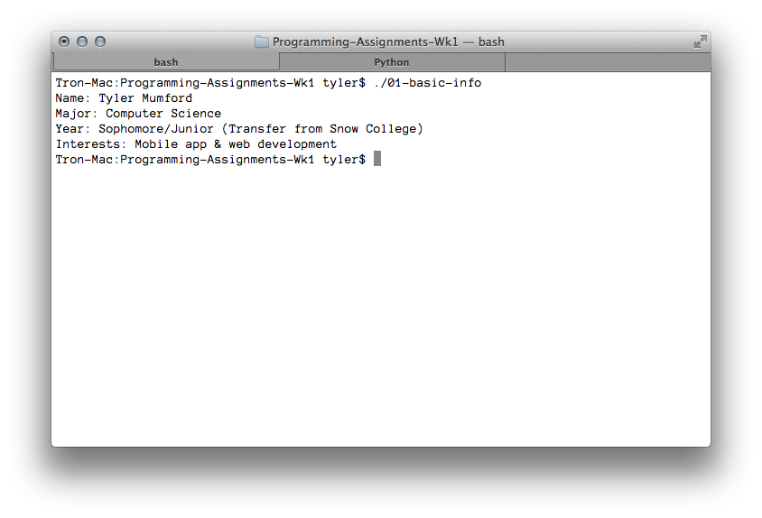

---

layout: default
title: 01-basic-info

---

{% highlight c++ %}
// Tyler Mumford, 2014
// A program to display basic information.

#include <stdio.h>

int main () {
	printf("Name: Tyler Mumford\n");
	printf("Major: Computer Science\n");
	printf("Year: Sophomore/Junior (Transfer from Snow College)\n");
	printf("Interests: Mobile app & web development\n");

	return 0;
}
{% endhighlight %}


